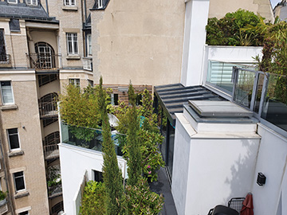
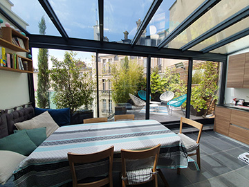
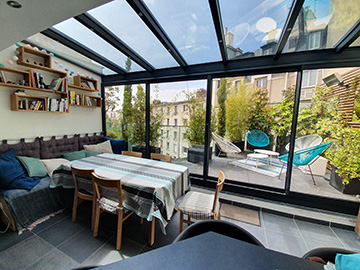
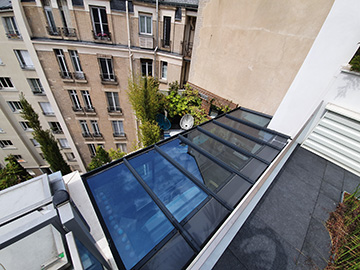

Notre service Reparation Veranda 92
Spécialistes de la reparation verandas 92 , notre entreprise est solidement et depuis longtemps implantée dans les Haut-de-Seine. Nous sommes en outre qualifiés RGE Qualibat, et donc à même d’effectuer toute intervention sur votre véranda avec compétence et sérieux, dans le respect des normes en vigueur. Dans tous les cas, nous fournissons des réponses rapides et précises à toute demande faite via notre formulaire en ligne. Nous intervenons ensuite sur la base d’une étude technique que nous réalisons sur mesure, en fonction de votre demande et des caractéristiques propres de votre véranda. N’hésitez pas à nous contacter, nous vous répondrons dans les 48 h ouvrées..
Une service de qualité



Entretien et réparation de votre véranda
Ajout d’équipements complémentaires
Rénovation totale de votre véranda
À la fois pour assurer la longévité de votre véranda et pour garantir sa parfaite isolation, il est indispensable de l’entretenir régulièrement : que votre véranda soit ancienne ou plus récente, qu’elle ait été ou non construite par notre entreprise, nous pouvons nous charger de cet entretien et vous libérez ainsi l’esprit. Lorsque de petites ou plus importantes réparations sont nécessaires, par exemple à la suite de fortes intempéries, nous nous en chargeons également. De cette façon, vous profitez au maximum et sans souci de votre agréable pièce à vivre supplémentaire.
En dehors d’éventuelles réparations, vous pouvez avoir envie d’ajouter à votre véranda des équipements plus performants, par exemple poser une serrure 5 point ; remplacer le vitrage existant par un vitrage antieffraction. Ou encore, vous souhaitez poser des stores perfectionnés, qui filtreront la lumière de façon optimale, etc. Réparation Véranda 92 met à votre disposition des professionnels qualifiés qui vous conseillent pour choisir les équipements correspondant à vos besoins et les installent conformément à vos désirs.
Si votre véranda est déjà ancienne et a mal vieilli, si vous venez d’acheter une maison équipée d’une véranda qui n’est pas vraiment à votre goût, Réparation Véranda 92 peut intervenir en rénovation totale. À la pointe des dernières techniques, nos professionnels s’engagent à mettre en œuvre les solutions innovantes qui vous garantiront une habitabilité optimale et la parfaite sécurité de votre véranda rénovée. Dans tous les cas, nous intervenons sur la base d’un devis détaillé, ferme et définitif. Avec Réparation Véranda 92, aucune mauvaise surprise à craindre !